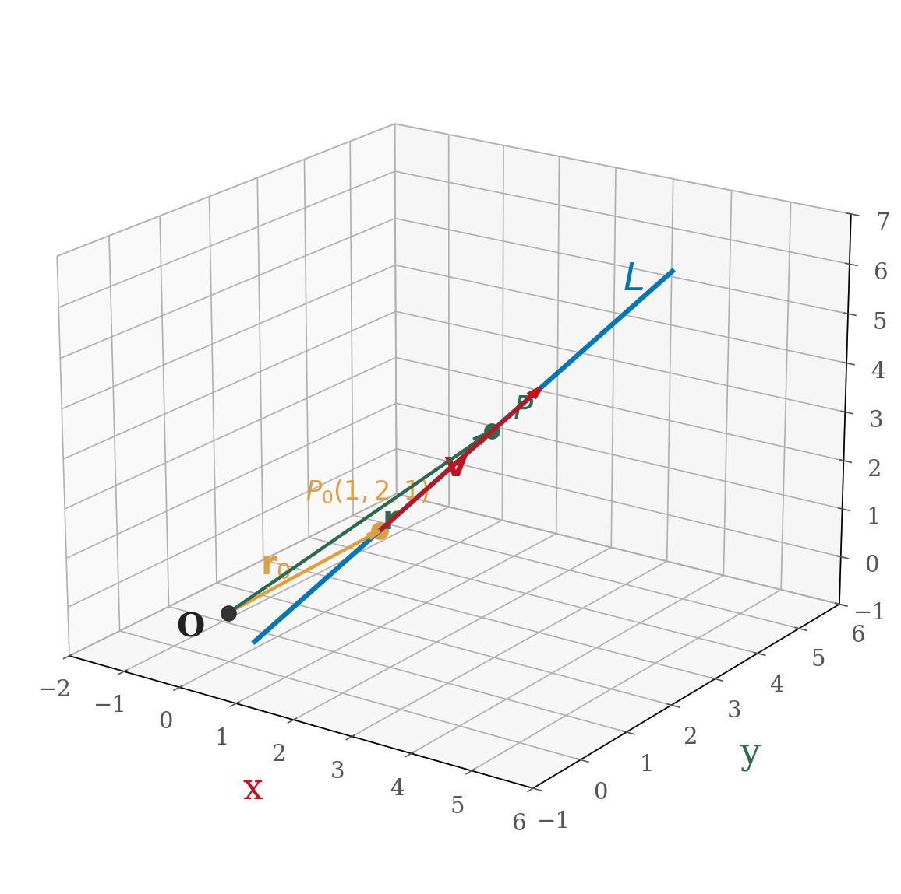
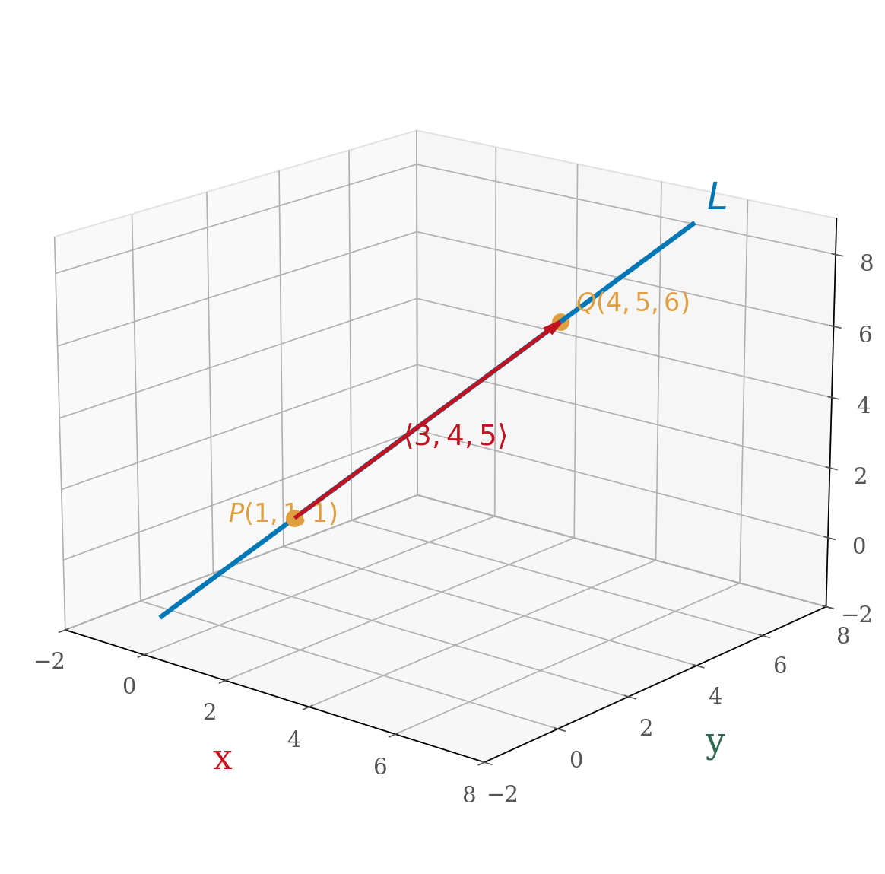
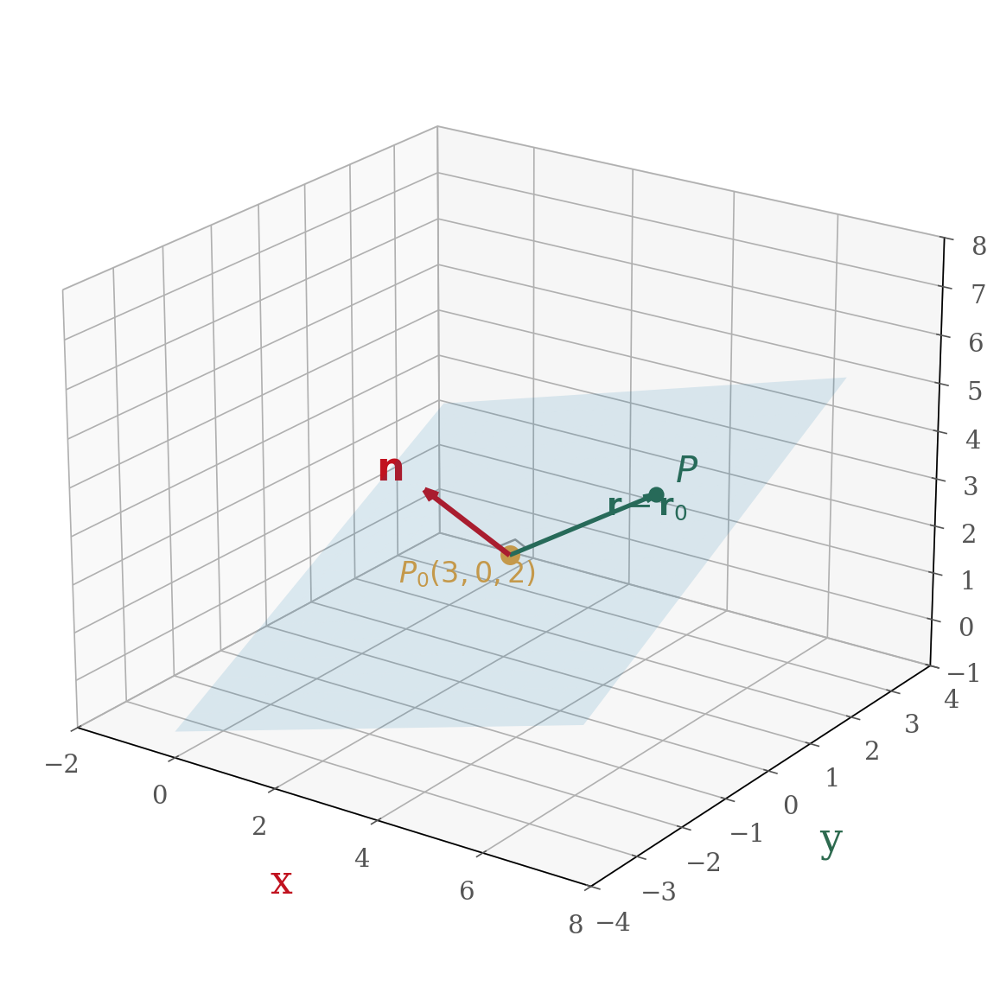

Lines in 2D — Review
In 2D, a line is determined by a point and a slope (direction):
\[y = mx + b \qquad \text{or} \qquad y - y_0 = m(x - x_0)\]
Find the equation of the line through \(P(0,0)\) and \(Q(1,2)\).
Find the slope, then use point-slope form.
Slope: \(m = \dfrac{2-0}{1-0} = 2\)
Using point-slope with \(P(0,0)\): \(y - 0 = 2(x - 0)\), so \(y = 2x\).
A line needs two things: a point and a direction.
Parametric Equations of Lines
Instead of \(y = mx + b\), we can describe a line parametrically:
\[x = x_0 + at, \qquad y = y_0 + bt\]
The parameter \(t\) sweeps out the line. The direction vector \(\vec{v} = \langle a, b \rangle\) tells which way the line goes.
Write parametric equations for the line through \(P(0,0)\) with direction \(\langle 1, 2 \rangle\).
Use the parametric form with the given point and direction.
\[x = 0 + 1 \cdot t = t, \qquad y = 0 + 2 \cdot t = 2t\]
Check: when \(t = 0\) we get \(P(0,0)\) \(\checkmark\). When \(t = 1\) we get \((1,2)\) \(\checkmark\).
Parametric Equations of Lines
Multiple parametrizations: The same line has many parametric descriptions.
Starting at \(Q(1,2)\) and going backward: \(x = 1 - s, \quad y = 2 - 2s\)
Parametric equations are not unique — different starting points and direction vectors can describe the same line.
Vector Equation of a Line
Pack the parametric equations into one vector equation:
\[\vec{r} = \vec{r}_0 + t\vec{v}\]
- \(\vec{r}_0\) = position vector of a known point on the line
- \(\vec{v}\) = direction vector (parallel to the line)
- \(t\) = parameter (varies over all real numbers)

A line in any dimension needs just two things: a point and a direction.
Lines in 3D
The same formula works in 3D — no changes needed!
\[\vec{r} = \vec{r}_0 + t\vec{v}\]
Find vector and parametric equations for the line through \(P(1,1,1)\) and \(Q(4,5,6)\).
Find the direction vector PQ, then write the vector equation. Expand into parametric form.
Direction vector: \(\vec{v} = \overrightarrow{PQ} = \langle 4-1,\; 5-1,\; 6-1 \rangle = \langle 3, 4, 5 \rangle\)
Vector equation: \(\vec{r} = \langle 1, 1, 1 \rangle + t\langle 3, 4, 5 \rangle\)
Parametric equations:
\[x = 1 + 3t, \qquad y = 1 + 4t, \qquad z = 1 + 5t\]

Symmetric Equations
From the parametric equations, solve each one for \(t\):
\[t = \frac{x - 1}{3} = \frac{y - 1}{4} = \frac{z - 1}{5}\]
If \(\vec{v} = \langle a, b, c \rangle\) (all nonzero), the symmetric equations of the line through \((x_0, y_0, z_0)\) are:
\[\frac{x - x_0}{a} = \frac{y - y_0}{b} = \frac{z - z_0}{c}\]
Uses:
- Quick way to check if a point is on the line (plug in and see if all three fractions are equal)
- Eliminates the parameter \(t\)
If one direction component is zero, that coordinate is constant — write it separately. For example, if \(a = 0\): \(x = x_0\) and \(\dfrac{y - y_0}{b} = \dfrac{z - z_0}{c}\).
Your Turn: Line Through Two Points
Find parametric and symmetric equations for the line through \(A(2, -1, 3)\) and \(B(4, 3, 1)\).
Find the direction vector AB, write parametric equations, then solve each for t.
Direction vector: \(\vec{v} = \overrightarrow{AB} = \langle 4-2,\; 3-(-1),\; 1-3 \rangle = \langle 2, 4, -2 \rangle\)
Parametric equations:
\[x = 2 + 2t, \qquad y = -1 + 4t, \qquad z = 3 - 2t\]
Symmetric equations:
\[\frac{x - 2}{2} = \frac{y + 1}{4} = \frac{z - 3}{-2}\]
Planes in 3D
A plane is determined by a point and a normal vector (perpendicular to the plane).
If \(\vec{r}_0\) points to a known point \(P_0\) and \(\vec{n}\) is normal to the plane, then any point \(\vec{r}\) in the plane satisfies:
\[\vec{n} \cdot (\vec{r} - \vec{r}_0) = 0\]

- Vector equation: \(\vec{n} \cdot (\vec{r} - \vec{r}_0) = 0\)
- Scalar equation: \(a(x - x_0) + b(y - y_0) + c(z - z_0) = 0\), where \(\vec{n} = \langle a, b, c \rangle\)
- Linear equation: \(ax + by + cz = d\)
The coefficients of \(x\), \(y\), \(z\) in the plane equation \(ax + by + cz = d\) are the components of the normal vector: \(\vec{n} = \langle a, b, c \rangle\).
Example: Equation of a Plane
Find the equation of the plane through \(P(3, 0, 2)\) with normal vector \(\vec{n} = \langle -1, -2, 3 \rangle\).
Use the scalar equation with the given point and normal vector.
Step 1: Use the scalar form \(\vec{n} \cdot (\vec{r} - \vec{r}_0) = 0\):
\[\langle -1, -2, 3 \rangle \cdot \langle x - 3,\; y - 0,\; z - 2 \rangle = 0\]
Step 2: Expand the dot product:
\[-(x - 3) - 2(y - 0) + 3(z - 2) = 0\]
Step 3: Simplify:
\[-x + 3 - 2y + 3z - 6 = 0\]
\[-x - 2y + 3z = 3\]
Shortcut: The coefficients of \(x\), \(y\), \(z\) come straight from the normal vector. Just plug in the point to find \(d\).
Line-Plane Intersection
Where does the line \(\vec{r} = \langle 1, 2, -1 \rangle + t\langle 4, -1, 3 \rangle\) intersect the plane \(-x - 2y + 3z = 3\)?
Substitute the parametric equations into the plane equation and solve for t.
Parametric equations: \(x = 1 + 4t\), \(y = 2 - t\), \(z = -1 + 3t\)
Substitute into \(-x - 2y + 3z = 3\):
\[-(1 + 4t) - 2(2 - t) + 3(-1 + 3t) = 3\]
\[-1 - 4t - 4 + 2t - 3 + 9t = 3\]
\[7t - 8 = 3\]
\[t = \frac{11}{7}\]
Plug back in:
\[x = 1 + 4\!\left(\tfrac{11}{7}\right) = \tfrac{51}{7}, \quad y = 2 - \tfrac{11}{7} = \tfrac{3}{7}, \quad z = -1 + 3\!\left(\tfrac{11}{7}\right) = \tfrac{26}{7}\]
Intersection point: \(\left(\dfrac{51}{7},\; \dfrac{3}{7},\; \dfrac{26}{7}\right)\)
Plane Through Three Points
Find the equation of the plane through \(P(1,1,2)\), \(Q(2,3,1)\), and \(R(-1,4,2)\).
Strategy: Find two vectors in the plane, then use the cross product to get the normal.

Find PQ and PR, compute their cross product, then use the result as the normal vector.
Step 1 — Two vectors in the plane:
\[\overrightarrow{PQ} = \langle 2-1,\; 3-1,\; 1-2 \rangle = \langle 1, 2, -1 \rangle\]
\[\overrightarrow{PR} = \langle -1-1,\; 4-1,\; 2-2 \rangle = \langle -2, 3, 0 \rangle\]
Step 2 — Normal vector \(\vec{n} = \overrightarrow{PQ} \times \overrightarrow{PR}\):
\[\vec{n} = \begin{vmatrix} \vec{i} & \vec{j} & \vec{k} \ 1 & 2 & -1 \ -2 & 3 & 0 \end{vmatrix} = \langle (2)(0) - (-1)(3),\; (-1)(-2) - (1)(0),\; (1)(3) - (2)(-2) \rangle = \langle 3, 2, 7 \rangle\]
Step 3 — Plane equation using point \(P(1,1,2)\):
\[3(x - 1) + 2(y - 1) + 7(z - 2) = 0\]
\[3x + 2y + 7z = 19\]
Three points \(\rightarrow\) two vectors \(\rightarrow\) cross product \(\rightarrow\) normal \(\rightarrow\) plane equation. This is one of the most important recipes in 12.5.
Angle Between Planes
The angle between two planes equals the angle between their normal vectors.

If two planes have normal vectors \(\vec{n}_1\) and \(\vec{n}_2\), the angle \(\theta\) between the planes satisfies:
\[\cos \theta = \frac{|\vec{n}_1 \cdot \vec{n}_2|}{|\vec{n}_1|\;|\vec{n}_2|}\]
We use the absolute value of the dot product so that \(0 \leq \theta \leq 90{^\circ}\).
Find the angle between the planes \(x - 2y + z = 2\) and \(3x - 2y + 3z = 3\).
Read off the normal vectors, then use the angle formula.
Normal vectors: \(\vec{n}_1 = \langle 1, -2, 1 \rangle\), \(\vec{n}_2 = \langle 3, -2, 3 \rangle\)
\[\vec{n}_1 \cdot \vec{n}_2 = (1)(3) + (-2)(-2) + (1)(3) = 3 + 4 + 3 = 10\]
\[|\vec{n}_1| = \sqrt{1 + 4 + 1} = \sqrt{6}, \qquad |\vec{n}_2| = \sqrt{9 + 4 + 9} = \sqrt{22}\]
\[\cos \theta = \frac{10}{\sqrt{6}\;\sqrt{22}} = \frac{10}{\sqrt{132}}\]
\[\theta = \cos^{-1}\!\left(\frac{10}{\sqrt{132}}\right) \approx 29.5{^\circ}\]
Special cases:
- Parallel planes: \(\vec{n}_1 = c\,\vec{n}_2\) (normal vectors are scalar multiples)
- Perpendicular planes: \(\vec{n}_1 \cdot \vec{n}_2 = 0\)
Distance from a Point to a Plane
To find the distance from a point to a plane, project a connecting vector onto the normal.
The distance from point \(P_1(x_1, y_1, z_1)\) to the plane \(ax + by + cz = d\) is:
\[D = \frac{|ax_1 + by_1 + cz_1 - d|}{\sqrt{a^2 + b^2 + c^2}}\]
Find the distance from \(P(-6, 3, 5)\) to the plane \(x - 2y - 4z = 8\).
Method: pick any point Q on the plane, form PQ, then project onto the normal. Or use the formula.
Method 1 — Projection approach:
Pick \(Q = (8, 0, 0)\) on the plane (set \(y = z = 0\)).
\[\overrightarrow{QP} = \langle -6 - 8,\; 3 - 0,\; 5 - 0 \rangle = \langle -14, 3, 5 \rangle\]
Normal: \(\vec{n} = \langle 1, -2, -4 \rangle\)
\[D = |\text{comp}_{\vec{n}}\, \overrightarrow{QP}| = \frac{|\vec{n} \cdot \overrightarrow{QP}|}{|\vec{n}|} = \frac{|(-14)(1) + (3)(-2) + (5)(-4)|}{\sqrt{1 + 4 + 16}} = \frac{|-14 - 6 - 20|}{\sqrt{21}} = \frac{40}{\sqrt{21}}\]
Method 2 — Formula:
\[D = \frac{|(-6)(1) + (3)(-2) + (5)(-4) - 8|}{\sqrt{1 + 4 + 16}} = \frac{|-6 - 6 - 20 - 8|}{\sqrt{21}} = \frac{40}{\sqrt{21}}\]
Geometry True/False — Lines and Planes in 3D
Let's test our spatial intuition! Decide whether each statement is True or False.
| Statement | T/F |
|---|---|
| Two planes either intersect or are parallel. | |
| Two lines either intersect or are parallel. | |
| Two planes parallel to a third plane are parallel. | |
| Two planes orthogonal to a third plane are parallel. | |
| Two lines parallel to a plane are parallel. | |
| Two lines orthogonal to a plane are parallel. | |
| A plane and a line either intersect or are parallel. |
Think carefully about each one. Sketch examples and counterexamples.
| Statement | T/F | Reason |
|—|—|—|
| Two planes either intersect or are parallel. | T | Planes are infinite — if they aren't parallel, they must cross somewhere. |
| Two lines either intersect or are parallel. | F | In 3D, lines can be skew (not parallel and not intersecting)! |
| Two planes parallel to a third plane are parallel. | T | All three share the same normal direction. |
| Two planes orthogonal to a third plane are parallel. | F | Think of two walls meeting at a corner — both perpendicular to the floor, but not parallel to each other. |
| Two lines parallel to a plane are parallel. | F | They can point in different directions within (or parallel to) the plane. |
| Two lines orthogonal to a plane are parallel. | T | Both must be parallel to the normal vector \(\vec{n}\). |
| A plane and a line either intersect or are parallel. | T | (Or the line lies in the plane, a special case of "parallel.") |
In 3D, lines have a third option: skew — not parallel and not intersecting. This never happens in 2D!
Section 12.5 Summary
\(\vec{r} = \vec{r}_0 + t\vec{v}\) — point + direction
\(x = x_0 + at\), \(y = y_0 + bt\), \(z = z_0 + ct\)
\(\dfrac{x - x_0}{a} = \dfrac{y - y_0}{b} = \dfrac{z - z_0}{c}\)
\(ax + by + cz = d\) — normal is \(\vec{n} = \langle a, b, c \rangle\)
Two vectors \(\rightarrow\) cross product \(\rightarrow\) normal \(\rightarrow\) equation
\(D = \dfrac{|ax_1 + by_1 + cz_1 - d|}{\sqrt{a^2 + b^2 + c^2}}\)
Big ideas: Lines need a point and a direction. Planes need a point and a normal. In 3D, lines can be skew — a concept that doesn't exist in 2D.
Homework
Section 12.5
2, 9, 10, 16, 21, 25, 30, 33, 57, 64, 71